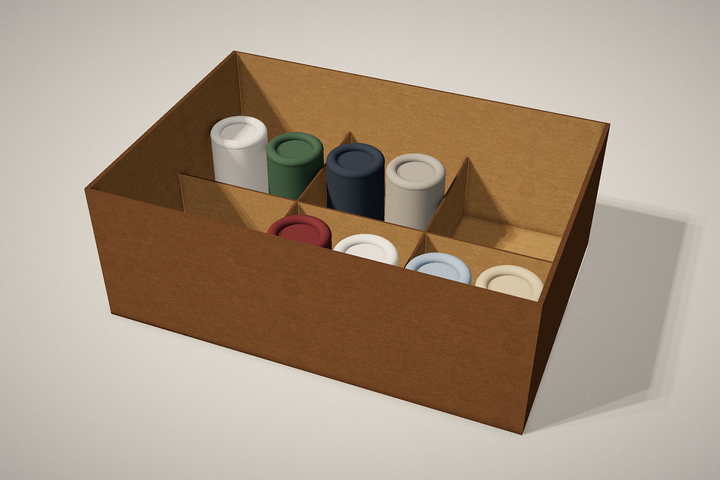
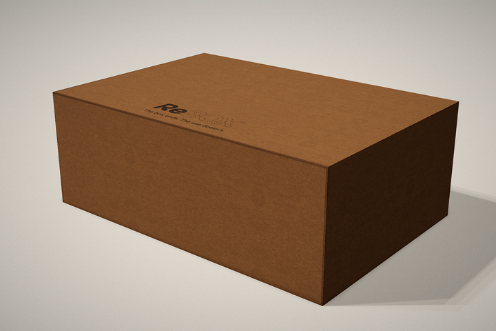
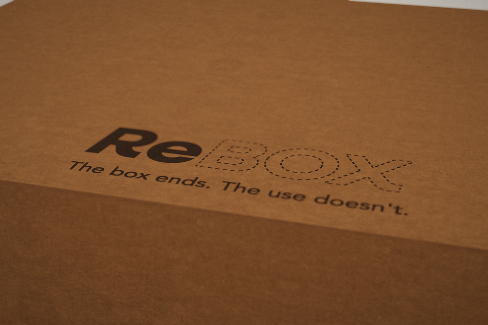
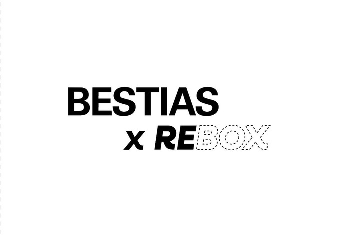

Our mission
To design footwear packaging that protects the product and stays useful after opening, becoming an organizer.
RE:BOX · DESIGNED TO STAY
First, it protects your shoes.
Then, it organizes your closet.
Packaging designed to stay.


Slide to discover the transformation.
Open, fold, fit and organize.
Follow the guide at your own pace.
Scroll to follow the assembly, step by step.
STEP 01 / 06
Remove the shoes and place the empty box on a clear, flat surface.
Keep the cardboard: it will become part of the box’s second life.
STEP 02 / 06
Identify the folds, tabs and slots. The unfolded view shows how the parts of the box fit together.
Find the divider pieces and follow the markings on the cardboard.
STEP 03 / 06
If your box came assembled, check that the base is flat and the walls are secure. If it is unfolded, fold the walls along the marked lines.
Check the shape of the base before securing the tabs.
STEP 04 / 06
Check that the tabs line up with their slots. If a tab is loose, press it gently into place to secure the walls.
If a piece resists, check its orientation before pushing it further.
STEP 05 / 06
Line up the dividers and slot them together. Place them inside the base to create the six compartments.
Check that the dividers sit securely and the base stays flat.
STEP 06 / 06
Arrange socks or small accessories in each compartment. Your box now has a new place in your closet.
Keep it dry and use it for lightweight items to care for the cardboard.
YOUR ORGANIZED SPACE STARTS HERE
Socks, accessories and the little things you like to keep close. Find a place for each one.
Tap each compartment to fill or empty it.
To design footwear packaging that protects the product and stays useful after opening, becoming an organizer.
To make a second life part of every package’s design, so keeping a box feels as natural as opening it.
The box ends. Its use goes on.

PACKAGING CAN HAVETHE COLLABORATION
RE:BOX designs the reusable packaging. BESTIAS brings its identity to the collaboration: a shoebox that stays useful after opening.
The identity of BESTIAS meets a RE:BOX structure designed to stay useful. The design does not end with delivery.

05 / WHAT YOU WANT TO KNOW
A few answers to care for
a good idea.
The box uses folds and press-fit tabs, with no adhesives.
Socks and small, lightweight accessories. The organizer has six compartments.
Keep it in a dry place, avoid contact with liquids and do not overload the compartments. That way, you can keep enjoying its second life.
The box is made from 1 mm cardboard and uses no glue. When you can no longer reuse it, check the cardboard acceptance guidelines at your local recycling point.